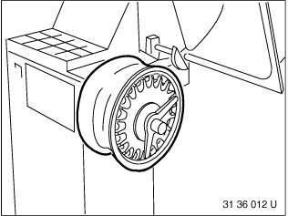
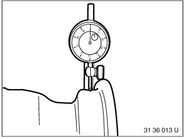
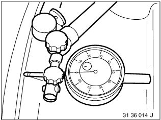

36 10 715 Checking Rim For Lateral and Radial Runout
36 10 715 Checking rim for lateral and radial runoutNecessary preliminary tasks:
^ Remove wheel
^ Checking front and rear wheel for face and radial runout
^ Pull tire off rim
^ Remove fitted balance weights
^ Remove dirt from rim well and rim flange
Important!
Disc wheels must not be repaired!

Mount disc wheel in balancing machine.

Use suitable wheel centering element supplied with corresponding balancing machine.
1. Basic flange
2. Wheel centering element
3. Type flange
4. Clamping nut
Also refer to section on Workshop Equipment.

Place dial gauge sensor on rim shoulder.
Turn wheel by hand and measure max. radial runout.
Carry out measurement on both rim shoulder sides.
Note:
Dial gauge must be vertical to rim shoulder.

Position sensor on rim flange.
Turn wheel by hand and measure max. lateral runout.
Carry out measurement on both rim flanges.
Note:
Dial gauge must be vertical to rim flange.
Important!
Avoid transformation errors during subsequent installation tasks.